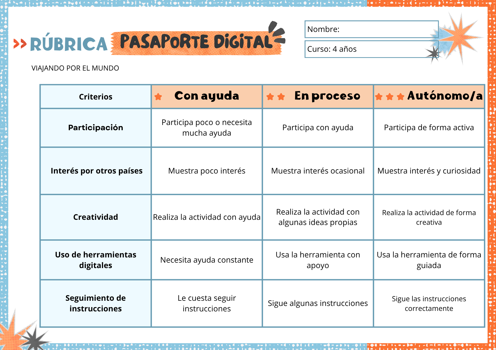
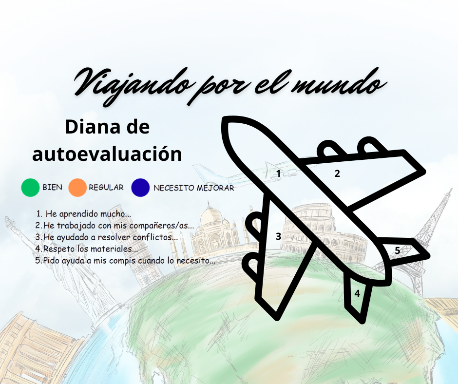

Instrumentos de evaluación
En este apartado encontrarás los instrumentos de evaluación que he diseñado para ofrecer feedback y retroalimentación a mi alumnado, es decir, son los que uso para evaluar a mi alumnado.
Teniendo en cuenta lo establecido en el artículo 11 del Decreto 100/2023, 9 de mayo y en el artículo 7 de la Orden 30 mayo 2023 que desarrolla el currículo de Educación Infantil en Andalucía, la evaluación debe servir para detectar, analizar y valorar los procesos de desarrollo del alumnado, así como sus aprendizajes, siempre en función de las características personales.
A continuación expongo los instrumentos que usaré en la SdA “Viajando por el mundo”, atendiendo a los criterios de evaluación que seleccioné en la tarea 6.1. Asociamos tareas a Criterios de evaluación.
Lista de cotejo
La lista de cotejo me va a permitir evaluar la participación en las actividades grupales, las actitudes de respeto y empatía, así como el interés por otras culturas (Criterios 4.1. y 4.5. del área 1 Crecimiento en Armonía y criterio 5.1. del área 3: Comunicación y Representación de la Realidad)
Esta lista de cotejo se utilizará mediante observación directa durante el desarrollo de las actividades, especialmente en asambleas, juegos grupales y dinámicas cooperativas. Se trata de un instrumento flexible, que tiene en cuenta las diferencias individuales del alumnado y su nivel madurativo.
Obtendré y analizaré los datos a través de registros diarios breves, observación directa, detección de conductas, etc. Esto me permitirá adaptar agrupamientos, reforzar las habilidades sociales y detectar necesidades de apoyo.
Adjunto ejemplo de la lista de cotejo:

Rúbrica
La rúbrica me permite evaluar la creatividad, el uso de herramientas digitales y la resolución de tareas analógicas y digitales para fomentar el pensamiento computacional, que son los criterios 3.4. y 3.7. del área 3: Comunicación y Representación de la Realidad y criterio 2.5 del área 2 Descubrimiento y Exploración del Entorno.
La rúbrica se utilizará principalmente durante la realización del producto final (pasaporte digital), a lo largo de las sesiones en las que el alumnado vaya incorporando información sobre cada país trabajado. Además, se aplicará de forma más específica en el momento de finalización del proyecto, para valorar el resultado global del pasaporte digital.
Su uso será continuo y formativo, permitiendo observar el progreso del alumnado mientras realiza la actividad, ofreciendo ayuda y retroalimentación en el momento.
Obtendré y analizaré los datos a través de observaciones durante la actividad, así como registrando el nivel alcanzado. Esto me permitirá ver el progreso individual, ajustar la ayuda del docente y valorar el uso de la tecnología.
De este modo, la rúbrica no se utiliza únicamente como instrumento de evaluación final, sino también como herramienta de seguimiento del proceso de aprendizaje.
Adjunto ejemplo de rúbrica de evaluación:

Diana de autoevaluación
La diana de evaluación es un instrumento ideal para la etapa de Educación Infantil, pues podemos evaluar nuestra propia SdA a través de la opinión del alumnado, algo muy importante a tener en cuenta para próximos proyectos.
La diana de evaluación me permite evaluar el interés, participación y expresión del alumnado, criterios 4.1. y 4.5. del área 1 Crecimiento en Armonía y criterio 3.7. del área 3 Comunicación y Representación de la Realidad.
La usaré al final de cada país y en el cierre del proyecto, esta diana está diseñada con 3 colores tal y como se muestra a continuación:
Se obtienen los datos gracias a esta autoevaluación del alumnado y analizando sus respuestas, esto me permite conocer sus motivaciones, ajustar las actividades y dar voz al alumnado y que se sientan escuchados.
Adjunto diana de autoevaluación:
